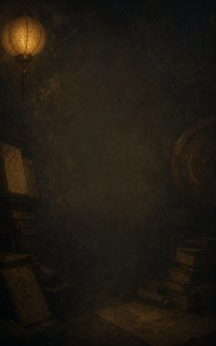
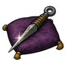
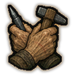
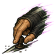
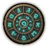
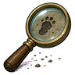
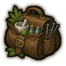
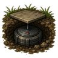
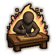
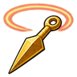

Technique trees › Skills and beast arts
Gigei Okuden (Skill techniques: advanced)
10 techniques in the Ninjutsu tab.
Learned from technique scrolls, mission rewards, written scrolls and scroll merchants; some NPC ninja know it. It counts toward the ninja build like other trees.

Okuden Shūtoku (Advanced skill mastery) C
Passive. C-rank passive. Diligent practice pays off.
Okuden Shūtoku (Advanced skill mastery) C
Passive. C-rank passive. Diligent practice pays off.
C-rank passive. Diligent practice pays off.

Rōken (An old dog) C
Passive. C-rank passive. Years of experience show.
Rōken (An old dog) C
Passive. C-rank passive. Years of experience show.
C-rank passive. Years of experience show.

Kurōto no Shirushi (Mark of a professional) C
Passive. C-rank passive. Not just good: fast.
Kurōto no Shirushi (Mark of a professional) C
Passive. C-rank passive. Not just good: fast.
C-rank passive. Not just good: fast.

Angō (Cipher) C
Passive. C-rank passive. A natural code-breaker.
Angō (Cipher) C
Passive. C-rank passive. A natural code-breaker.
C-rank passive. A natural code-breaker.

Gankō (Eye for detail) C
Passive. C-rank passive. Keen attention to the smallest things.
Gankō (Eye for detail) C
Passive. C-rank passive. Keen attention to the smallest things.
C-rank passive. Keen attention to the smallest things.

Ishi no Shuren (Physician's training) C
Passive. C-rank passive. Long-term medical care.
Ishi no Shuren (Physician's training) C
Passive. C-rank passive. Long-term medical care.
C-rank passive. Long-term medical care.

Jirai no Tatsujin (Mine mastery) C
Passive. C-rank passive. Expert with mines and traps.
Jirai no Tatsujin (Mine mastery) C
Passive. C-rank passive. Expert with mines and traps.
C-rank passive. Expert with mines and traps.
Shunkan Kioku (Photographic memory) C
Passive. C-rank passive. Recalls everything.
Shunkan Kioku (Photographic memory) C
Passive. C-rank passive. Recalls everything.
C-rank passive. Recalls everything.

Ichigei Shūchū (One-art focus) C
Chakra 20. C-rank. Work with total focus for a while.
Ichigei Shūchū (One-art focus) C
Chakra 20. C-rank. Work with total focus for a while.
C-rank. Work with total focus for a while.
| Rank | Chakra | Cooldown | Class level |
|---|---|---|---|
| C | 20 | 25 s | 5 |

Kaiden (Perfect skill mastery) B
Passive. B-rank passive. One of the world's greatest experts.
Kaiden (Perfect skill mastery) B
Passive. B-rank passive. One of the world's greatest experts.
B-rank passive. One of the world's greatest experts.
Chakra is the technique's base cost, the number in its def. In play it is multiplied by the pawn's chakra energy usage multiplier, which traits (chakra artificer 90%, volatile conduit 110%), World of Naruto genes and jutsu enhancements change, so the technique window can show a slightly different number for each ninja. Cooldowns are in-game time, as the technique window shows them, and the pawn's cooldown stat shortens or lengthens them. World of Naruto gives every ninja a base of 100 maximum chakra; genes and traits change it.